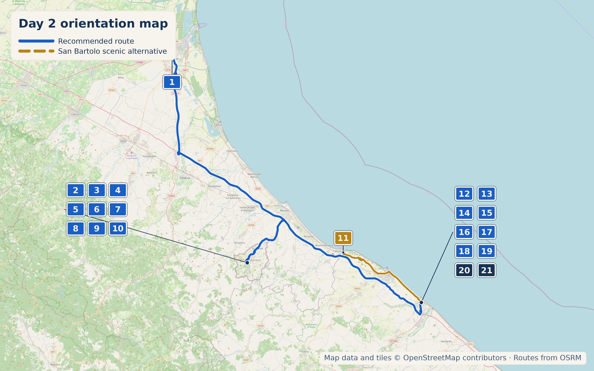

Overview
14 September 2026 is a Monday.

Stops

- Why stop: The oldest and most iconic of San Marino's Three Towers, 11th century, perched on the summit of Monte Titano — the single best view over the republic and the Adriatic plain below.
- Time required: 2–3 hours for the towers, Piazza della Libertà, and a wander
- Worth the detour: Yes — a genuinely independent microstate, not a theme-park version of one
- Parking: Paid lots below the historic centre; walk uphill from most of them
- Approx cost: €11 combined ticket covers Guaita, Cesta Tower, and museums
- Hours: 8:30am–7:45pm daily
- Why stop: The seat of San Marino's government — Captains Regent elected every six months, one of the world's oldest continuous republican systems. Neo-Gothic, built 1884–94.
- Time required: 20–30 min
.jpg)
- Why stop: A well-preserved Roman-era arch marking the entrance to Fano's old town.
- Time required: 20–30 min
San Marino — Lunch
4.4★/2,311 reviews. Described locally as the best-known osteria in San Marino. Try the tagliata with porcini.
4.5★/1,738 reviews. Panoramic hilltop views, genuinely elegant without tasting-menu pretension.
4.1★/261 reviews. 60+ years running.
San Marino — What to Buy

4.9★/108 reviews. The actual Torta Tre Monti factory since 1942. Factory visits possible by reservation.
Family-run leather goods shop founded in 1981, with four locations in the actual historic centre rather than the outlying castelli. Made-in-Italy leather bags, belts, wallets; personalization available. 5.0★/115 reviews on Tripadvisor.
San Marino — Cool, Interesting & Quirky
The training ground of San Marino's Crossbowmen, records dating to the 14th century, now a living folk tradition with public exhibitions and a small museum.
Fano — Coffee
The first documented reference to Moretta fanese anywhere is a 1908 ad placed by this exact café. 4.2★/80 reviews, genuinely mixed but mostly warm.
Genuinely historic, but not "the original" Moretta stop: the documented 1908 paper-trail origin is still Caffè Cavour. Caffè del Porto is a second historic location where the Moretta tradition resurfaced in 1964 at a sailors' bar once called "Ritrovo dei Lupi di Mare." Now a café/shop selling bottled Moretta, atmospheric because it is literally on the water.
Fano — Pasticceria
4.2★/517 reviews. Opened 1993 by Stefano Ceresani.
4.5★/73 reviews. Praised for Sacher torte; one complaint about chiacchiere priced at €48/kg — worth checking prices first.
Fano — Dinner
4.3★/295 reviews. 40+ years specializing in brodetto alla fanese.
4.5★/1,063 reviews. Below-ground old wine cellar.
Local Speciality & What to Buy
San Marino: piadina sammarinese, cappelletti, Sangiovese and Brugneto reds, Biancale white.
Fano: Brodetto alla fanese. Moretta fanese — sailors' coffee-and-liqueur digestivo, first documented 1908, entered AIBES's official cocktail list in 2006.
What to buy — San Marino: Torta Tre Monti from La Serenissima. Fano: Sacher torte from Longhini.
Hidden Gem
The genuine paper-trail birthplace of Moretta fanese.
Fano does still have an active boatbuilding industry, just industrial rather than heritage: Cantiere del Pardo builds Grand Soleil yachts (60+ feet) at a dedicated Fano shipyard. Different from the old wooden squero tradition, but worth knowing boatbuilding is not entirely gone from Fano.
Accommodation (Fano)
18th-century palazzo, built for the town pharmacist Dr. Ilari.
17th-century noble palace, strongest reviews of the group. My pick. The older B&B Dimora d'Epoca / "Il Palazzo" listing resolves to the same historic-palazzo area, so it is not mapped as a separate accommodation stop.
Today's Route & Timing
Organic Maps route legs (POIs remain visible)
Import Day 5 POIs once, then open each leg in order. The Google buttons above retain the complete route as a fallback.
Normal Route:
Scenic San Bartolo Route:
Useful stop maps: San Marino parking Google Gabicce Monte viewpoint Google Fano old town Google
Print timing summary: suggested 9:00am departure. Base normal day is approximately 8h15–9h15, finishing around 5:15–6:15pm. The scenic Gabicce Monte / San Bartolo route adds about 45–75 minutes. Palazzo Pubblico linger adds 20–30 minutes; La Serenissima adds 45–60 minutes; Cava dei Balestrieri adds 30–45 minutes; Fano port / Caffè del Porto adds 30–45 minutes. Under 8 hours is comfortable, 8–10 hours is a long day, and over 10 hours is a very long day.
Day 5 route map

Numbered points of interest
- B&B Casa Masoli, Ravenna StartVia Girolamo Rossi 22, 48121 Ravenna RA, Italy
GPS: 44.4199737, 12.2003868 - San Marino P9 Parking ParkingParcheggio P9, Via Gino Giacomini, 47890 Città di San Marino, San Marino
GPS: 43.937384, 12.445192 - Guaita Tower & Monte Titano Historic site / viewpointSalita Alla Rocca, 47890 Città di San Marino, San Marino
GPS: 43.9354691, 12.4493514 - Piazza della Libertà & Palazzo Pubblico Historic sitePiazza della Libertà, 47890 Città di San Marino, San Marino
GPS: 43.9367403, 12.4465224 - Ristorante Ritrovo dei Lavoratori Food stopAndrone dei Bastioni 4, 47890 Città di San Marino, San Marino
GPS: 43.9358760, 12.4464272 - La Terrazza, Hotel Titano Food stopContrada del Collegio 31, 47890 Città di San Marino, San Marino
GPS: 43.9360252, 12.4469842 - Buca San Francesco Food stopPiazzetta del Placito Feretrano 3, 47890 Città di San Marino, San Marino
GPS: 43.9353605, 12.4468161 - La Serenissima Shop / food heritageVia Venticinque Marzo 67, 47895 Domagnano, San Marino
GPS: 43.9531511, 12.4685640 - Fantini Pelletteria ShopContrada dei Magazzeni 23, 47890 Città di San Marino, San Marino
GPS: 43.9361136, 12.4476454 - Cava dei Balestrieri Historic site / optional stopVia Eugippo, 47890 Città di San Marino, San Marino
GPS: 43.9375482, 12.4457523 - Gabicce Monte / San Bartolo viewpoint Scenic route viewpointPiazza Valbruna, 61011 Gabicce Monte PU, Italy
GPS: 43.960330, 12.761220 - Fano centro storico Historic centrePiazza XX Settembre, 61032 Fano PU, Italy
GPS: 43.840900, 13.016950 - Arco di Augusto Historic siteVia Arco d'Augusto, 61032 Fano PU, Italy
GPS: 43.8430719, 13.0145105 - Caffè Cavour Food stopVia Camillo Benso Conte di Cavour 1, 61032 Fano PU, Italy
GPS: 43.8400902, 13.0195547 - Caffè del Porto Food stopVia Nazario Sauro 270, 61032 Fano PU, Italy
GPS: 43.8511711, 13.0162229 - Il Caffè del Pasticciere Food stopVia della Costituzione 8/A, 61032 Fano PU, Italy
GPS: 43.8385085, 13.0112355 - Panificio Pasticceria Forno Longhini Food stopViale I Maggio 15/17, 61032 Fano PU, Italy
GPS: 43.8470115, 13.0116548 - Ristorante Angela Food stopViale Adriatico 13, 61032 Fano PU, Italy
GPS: 43.8460841, 13.0255815 - La Taverna del Ghiottone Food stopVia Roma 87/B, 61032 Fano PU, Italy
GPS: 43.84024, 13.0114404 - B&B La Casa di Fano AccommodationCorso Giacomo Matteotti 173, 61032 Fano PU, Italy
GPS: 43.842910, 13.018100 - Palazzo Rotati AccommodationVia Nolfi 49, 61032 Fano PU, Italy
GPS: 43.8442214, 13.0192360
OpenStreetMap-derived orientation map only, not turn-by-turn navigation. Import this day’s POIs once to keep its bookmark pins visible in Organic Maps navigation. Use the Organic Maps route legs above for POI-visible navigation; Google Maps remains the complete-route fallback.
If Time Is Tight
San Marino: Guaita Tower and the ridge walk only. Fano: Arco di Augusto and coffee at Caffè Cavour, nothing else.
If You've Got Half a Day
Add Piazza della Libertà and Cava dei Balestrieri in San Marino; a full wander of Fano's old town and the Lungomare in the evening.
Skip It
🏆 Today's Winners
Road Trip Score
| Category | Rating |
|---|---|
| Food | ★★★★☆ |
| Coffee | ★★★★☆ |
| Atmosphere | ★★★★★ |
| Photography | ★★★★★ |
| History | ★★★★★ |
| Young Traveller Appeal | ★★★★☆ |
| Worth Detour | ★★★★★ |
.jpg)